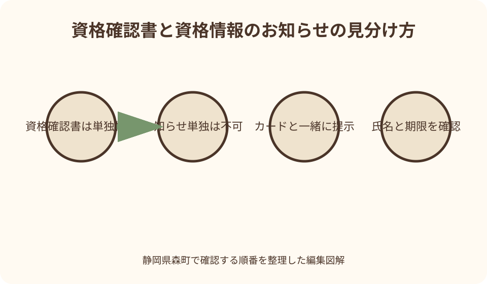
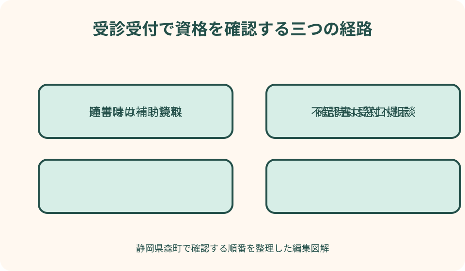

健康・医療・保険｜最終確認 2026-08-10
静岡県森町の国民健康保険「資格確認書」ガイド｜資格情報のお知らせとの違いと受診方法
健康保険証がなくなった後も、医療保険の資格を示す方法は一つではありません。静岡県森町の国民健康保険では、マイナ保険証を使う人には原則として「資格情報のお知らせ」、使わない人には「資格確認書」が関係します。名前は似ていますが、単独で受診に使えるかどうかが大きく異なります。本稿では、受診前に迷わないための見分け方と、カードリーダーが動かないときの備えまで順に整理します。

編集イラスト最初に結論：二つの書類は役割が違う
2024年12月2日に従来型の健康保険証の新規発行が終了し、その後の経過措置も終わりました。2026年8月現在、医療機関の受付では、登録済みのマイナンバーカードをマイナ保険証として使うか、保険者が交付した資格確認書を提示するのが基本です。
資格確認書は、券面に氏名、保険者、記号・番号などが記載された書類です。マイナ保険証を使わない人は、これを医療機関や薬局の窓口へ出すことで、保険診療を受けるための資格を確認してもらえます。
一方、資格情報のお知らせは、マイナ保険証を持つ人が自分の資格内容を把握し、オンライン資格確認ができない場面に備える補助書類です。資格情報のお知らせだけを窓口に出しても、保険診療の資格確認は完了しません。
封筒を開けずに『新しい保険証だろう』と保管すると、受診日に初めて違いへ気づくことがあります。届いたら表題、有効期限、対象者の氏名を確認し、家族の分と取り違えない場所へ置くことが第一歩です。
資格確認書と資格情報のお知らせを見分ける
最も簡単な見分け方は、書類上部の名称を読むことです。「資格確認書」と書かれていれば単独提示ができ、「資格情報のお知らせ」と書かれていればマイナンバーカードと組み合わせて使うもの、と覚えると混乱が減ります。
資格確認書を使う人は、受診のたびに有効期限を確認します。有効期間は最長5年の範囲で保険者が設定するため、全国一律の日付ではありません。森町から届いた現物に印字された期限が判断基準です。
資格情報のお知らせは、マイナ保険証のICチップが壊れたときの代用品ではありません。カードリーダーや通信の不具合でオンライン確認ができない場合に、マイナンバーカードと一緒に示して資格情報を確認するために使います。
スマートフォンで撮った資格情報のお知らせの画像や、データ表示だけでは、厚生労働省が示す紙の提示方法を満たしません。非常時に備えるなら、切り離せる様式は紙のまま財布などへ入れ、マイナンバーカードと一緒に持参します。
森町国保で資格確認書が交付される人
森町公式案内では、マイナ保険証を持っていない人には資格確認書を申請なしで交付すると説明しています。ここでいう『持っていない』には、マイナンバーカードを取得していない場合だけでなく、健康保険証としての利用登録をしていない場合も含まれます。
マイナンバーカードの電子証明書が有効でない場合など、マイナ保険証として継続利用できない状態も確認が必要です。自分の登録状況はマイナポータルで確認でき、分からなければ森町の担当窓口へ現在の状態を照会できます。
高齢、障害などによりカードを受付で使うことが難しく、介助があっても利用が困難な人は、申請によって資格確認書の交付対象になり得ます。本人だけでなく代理人による申請も想定されていますが、必要書類は個別に確認してください。
マイナンバーカードを紛失した人や更新手続中の人も、申請による交付の対象になり得ます。受診予定が迫っているなら、再発行を待てばよいと決めつけず、カードの停止手続と資格確認書の相談を分けて進めることが大切です。

マイナ保険証を使う人に届く書類
マイナ保険証の利用登録が済んでいる森町国保加入者には、資格情報のお知らせが交付されます。これは、自分が加入する保険者や負担割合などを確認しやすくし、オンライン資格確認が一時的にできない場面を補う書類です。
通常の受診では、医療機関の顔認証付きカードリーダーへマイナンバーカードを置き、本人確認と資格確認を行います。暗証番号または顔認証を使い、情報提供への同意画面は内容を読んで選びます。
利用登録をしたか思い出せない場合、マイナポータルの健康保険証画面で登録状況を確かめられます。医療機関や薬局のカードリーダーでも登録できますが、受診直前の慌ただしい場面を避け、あらかじめ確認しておくと安心です。
マイナンバーカードそのものと資格情報のお知らせは、同じ封筒や透明ケースへまとめ過ぎない方が安全です。カードを紛失したときに補助書類まで同時に失わないよう、日常の携行分と自宅保管分を分ける考え方もあります。
医療機関・薬局での出し方
資格確認書を使う場合は、受付で原本を提示します。窓口では氏名と有効期限を確認し、必要に応じて負担割合などを確かめます。コピーを常用できるとは限らないため、原本を持参するのが基本です。
マイナ保険証を使う場合は、受付のカードリーダーへカードを置きます。資格情報のお知らせを毎回先に出す必要はありませんが、機器障害や通信障害に備えて携行しておくと、受付での確認方法を切り替えやすくなります。
受診先がオンライン資格確認に対応していない場合、森町公式案内ではマイナンバーカードと資格情報のお知らせを一緒に提示する方法が案内されています。受診前に医療機関へ利用方法を尋ねておけば、当日の持ち物不足を避けられます。
公費負担医療の受給者証、自治体独自の医療費助成証、診察券などは、マイナ保険証や資格確認書とは別に提示を求められる場合があります。『保険資格が確認できたから全部不要』とは考えず、受診先の案内に従ってください。
カードリーダーや通信が止まったとき
受付でカードリーダーが動かなければ、まず職員へ障害の状況を伝えます。機器の一時的な不具合なのか、資格情報自体が見つからないのかで次の確認方法が違うため、画面の表示だけを見て無保険だと判断する必要はありません。
厚生労働省は、マイナンバーカードとマイナポータルの資格情報画面、またはダウンロードした資格情報PDFを組み合わせる方法を示しています。スマートフォンの電池残量とログイン方法を受診前に確かめておくと、紙がない場合の備えになります。
紙の資格情報のお知らせを持っているなら、マイナンバーカードと一緒に受付へ示します。ここでも、お知らせ単独では足りません。『カードはあるが読み取れない』という状態を補う組み合わせです。
いずれも用意できない初診の場面などでは、医療機関で資格申立書へ記入する運用が示されています。すべての現場で同じ手順になるとは限らないため、受付の指示に従い、後日必要になる確認事項も聞いておきます。
旧健康保険証はもう頼れない
従来型の健康保険証は2024年12月2日以降、新規発行されなくなりました。その後、有効期限まで使える経過期間や窓口負担に関する暫定的な取扱いがありましたが、2026年8月の受診準備では旧保険証を中心に考えない方が安全です。
厚生労働省の案内では、従来型保険証の暫定的な取扱いは2026年7月31日で終了しています。古いカードが財布に残っていても、資格確認書やマイナ保険証の代わりとして持って行くのではなく、現在有効な手段を確かめます。
家族の財布を整理するときは、古い保険証と資格確認書を外見だけで判断しないよう注意します。書類名、交付者、有効期限を読み、処分方法が分からない場合は森町国保年金係へ尋ねてください。
古い保険証を処分する際は、氏名、記号・番号などの個人情報が読めないようにします。森町から返却の案内がある場合はその方法を優先し、家族が誤って再び持ち出さないよう保管場所も整理します。

70歳から74歳の負担割合も確認する
森町国保に加入する70歳から74歳の人には、負担割合を記した資格確認書または資格情報のお知らせが交付されます。医療機関の窓口負担を確認する大切な表示なので、誕生日を迎える家族は新しい書類の到着と記載内容を確認します。
森町の案内では、適用は原則として70歳になる誕生月の翌月からです。ただし1日生まれの人は誕生月からとなります。誕生日当日から一律に変わるわけではない点に注意が必要です。
負担割合は所得判定などによって決まるため、年齢だけから自己判断しません。前年と表示が変わった場合は、まず届いた通知を読み、判定の根拠や確認方法を森町へ問い合わせます。
75歳になると原則として後期高齢者医療制度へ移るため、森町国保の書類をそのまま使い続けるものではありません。切替時期の書類が複数届いたら、制度名と適用開始日を家族で照合します。
転職・扶養・転居で資格が変わったとき
資格確認書に有効期限が残っていても、就職して勤務先の健康保険へ入った日以後は、森町国保の資格を使い続けることはできません。国保を脱退する届出と、新しい保険資格の確認を速やかに行います。
扶養に入った、森町から転出した、生活状況が変わったといった場合も同様です。印字された期限だけを見て利用すると、後日、森町国保が負担した医療費の返還を求められる可能性があります。
反対に、勤務先の健康保険をやめて森町国保へ加入するときは、加入届を出しただけで受診準備が終わるとは限りません。新しい資格がオンラインへ反映される時期や、交付される書類を窓口で確認します。
資格が切り替わる時期に受診するなら、いつ、どの保険を喪失し、いつからどの保険へ加入したかを日付で伝えます。手元の古い書類を見せるだけでなく、勤務先や森町から受け取った資格取得・喪失の資料も整理してください。
届かない・なくした・破損した場合
家族には届いたのに自分の資格確認書だけ見当たらない場合、まず加入先が本当に森町国保か、マイナ保険証の登録があるかを確かめます。世帯内でも交付される書類の種類が同じとは限りません。
郵便物が届かないときは、転居届、郵便の転送、宛名、世帯主との関係など複数の原因が考えられます。個別事情を推測せず、対象者の氏名と生年月日、住所、受診予定日を準備して森町国保年金係へ相談します。
紛失や破損では、再交付に必要な本人確認書類や代理手続の条件を先に聞きます。町公式ページだけで必要物を確定できない場合は、来庁前の電話確認が二度手間を減らします。
盗難の可能性がある場合は、再交付相談だけで終わらせず、状況に応じて警察への届出や個人番号カードの一時停止も検討します。資格確認書とマイナンバーカードでは連絡先と手続が違うため、失った物を正確に伝えてください。
家族や施設職員が支える場合
高齢の家族が自分で書類を管理しにくい場合、受診する本人、同行する家族、施設職員の誰が何を持つかを決めます。資格確認書の原本が複数の場所を行き来すると、次の受診時に所在不明になりやすいためです。
マイナ保険証の利用が難しい人については、介助で利用できるか、資格確認書の申請が適切かを本人の希望も踏まえて検討します。便利さだけで一つの方法を押しつけず、受診現場で継続できる方法を選びます。
代理人が資格確認書の交付を申請できる場合でも、委任状や本人確認書類などの要否は状況で異なります。施設入所、成年後見、遠方家族など事情を具体的に伝え、森町から必要とされた資料をそろえます。
家族間の共有メモには、書類そのものの写真を広く送るのではなく、名称、有効期限、保管者、次回受診日だけを書く方法があります。保険者番号や個人番号を一般のグループチャットへ載せない配慮も必要です。
森町で受診前に確認するチェックリスト
最初に、本人が森町国保へ現在加入しているかを確認します。次に、マイナ保険証の利用登録の有無、手元の書類名、有効期限、受診する医療機関の受付方法という順で見れば、必要な持ち物が絞れます。
三倉や天方など町北部から医療機関や役場へ移動する人は、書類不足による往復の負担が大きくなりがちです。出発前に受診先と国保年金係へ電話し、原本の要否や代理相談の可否を確認しておく価値があります。
公立森町病院に限らず、町外の医療機関や薬局でも基本となる資格確認の考え方は同じですが、受付設備や案内方法には違いがあります。初めての受診先では、予約時にマイナ保険証への対応状況も尋ねます。
休日や夜間に急な受診が必要なら、書類探しだけで受診を遅らせてはいけません。症状の緊急性を優先して医療機関へ連絡し、資格確認の資料が足りないことを受付へ率直に伝えて指示を受けます。
資格確認書の良い点
資格確認書の良い点は、マイナンバーカードを持たない人でも、従来の保険証に近い感覚で窓口へ単独提示できることです。デジタル機器の操作が難しい人にも、保険診療へつながる明確な手段が残されています。
カードリーダーの操作や暗証番号入力を毎回行わずに済むため、本人の状態や受診環境によっては負担を減らせます。家族や施設が受診準備を支える場合にも、必要な書類を言葉で確認しやすい利点があります。
申請をしなければ誰にも届かない制度ではなく、マイナ保険証を持たない加入者には原則として保険者から交付されます。この仕組みは、制度変更を知らないまま無保険扱いになる不安を和らげます。
ただし、紙だから登録状況の変化と無関係に使えるわけではありません。資格喪失後の利用を防ぐには、就職、扶養、転居などの変化を家族が把握し、届出と書類整理を同時に行う必要があります。
資格確認の案内に注文したい点
注文したい点は、「資格確認書」と「資格情報のお知らせ」の名称が似ており、初めて受け取る人には用途の差が直感的に分かりにくいことです。封筒や案内文に、単独利用の可否をさらに大きく表示してほしいところです。
マイナ保険証を使う人にも紙が届くため、『この紙が新しい保険証だ』という誤解が生まれます。医療機関側でも、受付に二つの実物見本を掲示し、何と何を組み合わせるのかを短く示すと安心につながります。
町の案内から国の説明へ移ると、対象制度や経過措置の日付が変わり、古い検索結果も混在します。各ページには、現在有効な説明かどうかを判断できる更新日と、終了した措置をより明確に示してほしいと感じます。
制度の説明が正しくても、紛失、施設入所、カード更新中、資格切替直後といった現場の迷いは一枚の案内で解けません。森町の窓口には、書類名だけでなく生活状況から相談を受け止める案内を期待します。
使えないときの代案・結論
マイナ保険証が読み取れないときの第一の代案は、マイナポータルの資格情報画面またはPDFをカードと組み合わせて示すことです。第二の代案は、紙の資格情報のお知らせとカードを組み合わせる方法です。
資格確認書を忘れた場合や、いずれの補助資料もない場合は、受診先へ事情を説明します。資格申立書、後日の資格確認、一時的な全額負担など取扱いが分かれる可能性があるため、その場で金額と精算方法を確認してください。
マイナンバーカードの操作を継続して行うことが難しいなら、その都度の障害対応を繰り返すより、資格確認書の交付申請を森町へ相談する方が生活に合う場合があります。本人の状態と受診頻度を伝えることが判断材料になります。
結論として、森町国保の加入者は『何を持っているか』ではなく、『どの資格確認手段が今有効か』を見ます。資格確認書は単独、資格情報のお知らせはマイナンバーカードと一緒、という違いを家族で共有しておけば、多くの受付混乱を避けられます。
大石の視点：家族の保険書類を一度棚卸しする
大石の視点では、制度変更の価値は新しい言葉を覚えることではなく、必要な日に迷わず受診できる状態をつくることにあります。財布に入ったカードを全部持って行く方法は、古い書類の誤提示を招きます。
森町では、親世代は資格確認書、子世代はマイナ保険証というように、同じ世帯でも受診方法が分かれます。家族全員を一つのやり方へ寄せるより、氏名ごとの確認手段と有効期限を一覧にする方が実用的です。
実家の片付けや施設入所の準備では、不動産や通帳の書類に目が向きがちですが、次の受診に必要な保険書類も優先順位が高いものです。原本の所在、保管者、緊急時に持ち出す袋を決めておきます。
一度一覧を作って終わりにはしません。就職、退職、転居、70歳・75歳の節目、電子証明書の更新など、資格確認の方法が変わる日に見直します。生活の変化と保険書類を同じ予定表へ置くことが、現実的な備えです。
問い合わせ先と確認の伝え方
森町国保の資格確認書や資格情報のお知らせについては、森町役場住民生活課国保年金係が入口です。電話番号や受付時間は変更される可能性があるため、来庁当日に町公式ページの担当欄で確認します。
問い合わせ時は、『資格確認書がほしい』だけでなく、森町国保の加入者か、マイナ保険証の登録状況、カード紛失や更新の有無、受診予定日を伝えます。状況が具体的なら、申請の要否と必要物を確認しやすくなります。
マイナンバーカードの申請、受取、電子証明書更新そのものは、保険資格の担当と手続の担当が異なる場合があります。森町のマイナンバーカード案内も読み、どちらの相談かを切り分けてください。
窓口で得た回答は、確認日、担当課、必要書類、次に行うことの四点だけでも記録します。制度や本人の加入状況が変わった後に古い回答を流用せず、再確認が必要な条件も一緒に聞いておくと安心です。
まとめ：今日できる三つの確認
今日できる一つ目は、財布や保管箱から保険関係の書類を出し、資格確認書、資格情報のお知らせ、期限切れの旧保険証に分けることです。名称と有効期限を読めば、受診に使う物が明確になります。
二つ目は、マイナ保険証を使う本人についてマイナポータルで登録状況を確かめることです。資格情報のお知らせも所定の場所に保管し、機器障害時にカードと組み合わせられるよう準備します。
三つ目は、書類が届かない、紛失した、利用が難しい、資格切替中といった事情があれば、受診日より前に森町国保年金係へ相談することです。対象者と日付を伝え、申請の要否を確認します。
本稿は2026年8月10日に一次情報を照合した案内です。制度運用や様式は改定され得るため、実際の受診や申請では森町と厚生労働省の最新情報を確認し、個別の資格状態は加入する保険者の回答を優先してください。
公式情報・確認先
掲載内容は次の一次情報を基礎に整理しました。営業、料金、催し、交通は変わるため、出発前または手続き前にリンク先で最新情報を確認してください。
- 国民健康保険（静岡県森町、2026-08-10確認）
- マイナンバーカードを健康保険証として利用できます（静岡県森町、2026-08-10確認）
- マイナンバーカードの申請・交付について（静岡県森町、2026-08-10確認）
- 資格確認書について（マイナ保険証を使わない場合の受診方法）（厚生労働省、2026-08-10確認）
- 医療機関・薬局での資格確認方法（厚生労働省、2026-08-10確認）
- 健康保険証の廃止に関するよくある質問（厚生労働省、2026-08-10確認）